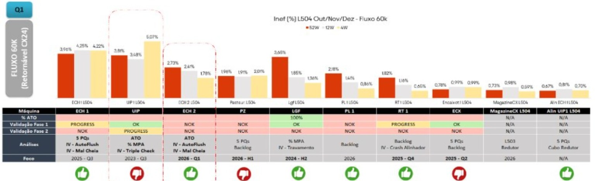

Etapa 1
Motivo da escolha
Racional
No período de outubro, novembro e dezembro de 2025, a ECH 02 apresentou 2,40% de ineficiência, ocupando a terceira posição entre as máquinas com maior perda.
A ECH 01 não foi selecionada porque já havia sido tratada no ATO do Q4. A escolha da ECH 02 permitiu atuar na segunda enchedora e posteriormente validar as duas em conjunto.
ECH 01+ECH 02→Validação conjunta
Anomalias orientadoras
IV AutoFlush IV Mal Cheia

Ranking de ineficiência da Linha 504 no período analisado.